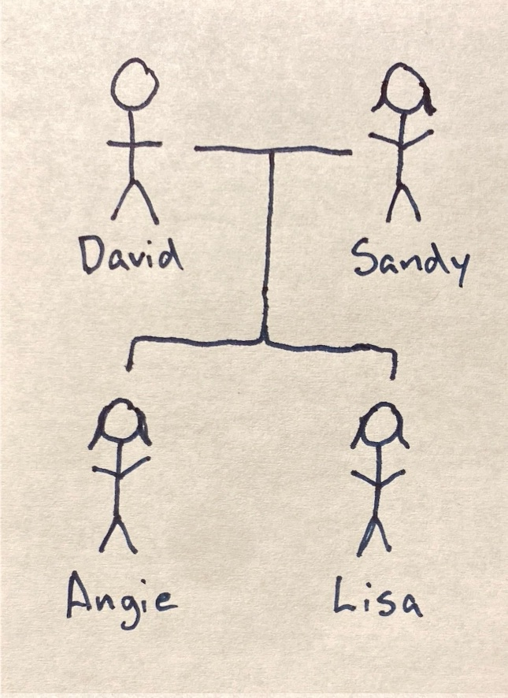

← Return to Families
David and Sandra Schneider Family

David Alan Schneider
- Born: 25 November 1953 in Evansville, Vanderburgh, Indiana, USA
- Died: Living
- Buried: Tupman Cemetery
- Baptized:
- Attended: St. Agnes Catholic School 1st-8th
- Attended:
- Graduated: F.J. Reitz High School 1972
- Graduated:
- Graduated:
- Married: 3 September 1977 Sandra Lee (Schoettlin) Schneider
Sandra Lee (Schoettlin) Schneider
- Born: 8 July 1958 in Evansville, Vanderburgh, Indiana, USA
- Died: 2 June 2011 at St. Mary's Hospital in Evansville, Vanderburgh, Indiana, USA
- Buried: 6 June 2011 at Tupman Cemetery in Evansville, Vanderburgh, Indiana, USA
- Baptized:
- Attended: West Terrace
- Attended: Evansville Lutheran School ??-8th
- Graduated: F.J. Reitz High School 1977
- Graduated:
Married
- Date: 3 September 1977
- Where: Redeemer Lutheran Church in Evansville, Vanderburgh, Indiana, USA
- Officient:
Residence
- 1500 South Red Bank Road, Evansville, IN 47712 ==
- 2930 Orchard Road, Evansville, IN 47720 == ???? to present
Angela Dawn Schneider
- Born: 5 September 1979 at 10:05pm at St. Mary's Hospital in Evansville, Vanderburgh, Indiana, USA
- Died: Living
- Buried:
- Baptized: 16 December 1979 at Messiah Lutheran by Pastor Gerald Schumocker
- Attended: New Bethel Baptist Church Kindergarten
- Attended: Evansville Lutheran School 1st grade
- Attended: Daniel Wertz 2nd-5th
- Attended: Perry Heights Middle School 6th-8th
- Confirmed: 4 April 1993 at Messiah Lutheran
- Graduated: F.J. Reitz High School 1997
- Married: Andrew James Moad on 1 July 2000
- Graduated: Indiana University (B.A. Criminal Justice) 2001
Lisa Marie Schneider
- Born: 6 August 1983 at Deaconess Hospital in Evansville, Vanderburgh, Indiana, USA
- Died: Living
- Buried:
- Attended: Daniel Wertz Elementary School K-5th
- Attended: Evansville Lutheran School 6th-8th
- Graduated: F.J. Reitz High School 2002
- Graduated: Ivy Tech (Associates in Early Childhood Development) About 2004
- Married: Andrew Cleavenger 3 September 2011
← Return to Families